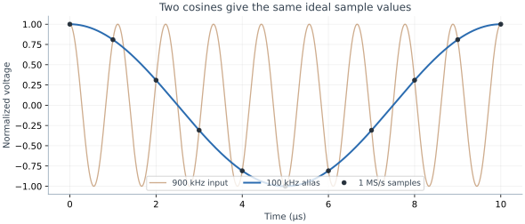
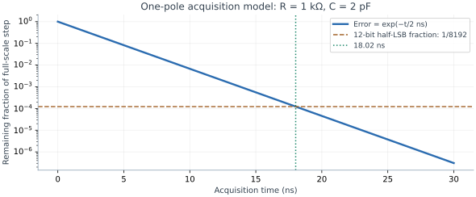

Sampling, Aliasing & Settling
How a clocked switch connects analog accuracy to digital timing.
- Explain why out-of-band inputs can appear inside a digital signal band.
- Calculate acquisition time, charge error, and a jitter-only SNR limit.
- Specify the analog timing contract around a converter.
1. Sampling is a timed analog operation
An ADC's output word arrives on a digital interface, but the value was determined by charge and voltage at a particular analog instant. The sample switch has resistance, the capacitor takes time to acquire a new input, and the clock has uncertainty. The converter's protocol timing does not prove that its analog input had settled.
During track/acquire, a source drives a sampling capacitor through a switch. During hold, the voltage is retained while conversion uses it. Sampling bandwidth, acquisition time, conversion latency, throughput, and interface clock frequency are distinct specifications. ADI MT-002 develops this sampled-data viewpoint.
| Term | Meaning | Question to ask |
|---|---|---|
| Sample rate | New analog samples per second | Which frequencies fold into the signal band? |
| Acquisition time | Interval the source can charge the sample network | Does the worst input step settle? |
| Conversion latency | Time from sample to a valid result | Which input instant does this word represent? |
| Clock jitter | Variation of the sampling instant | How much voltage error comes from input slope? |
2. A digital filter cannot unmix an alias
For ordinary baseband sampling, the analog spectrum must be sufficiently band limited below fs/2 before sampling. The condition is about all signals and noise reaching the sampler, including interferers, not just the desired tone. Practical anti-alias filters need a transition band, so “sample at exactly twice the highest frequency” is not a robust filter design rule.
A real sinusoid folds to falias = mink integer|fin − kfs| in the interval 0 to fs/2. At 1 MS/s, a 900 kHz cosine and a 100 kHz cosine have identical samples. Their analog frequencies cannot be recovered from those samples alone. Intentional bandpass undersampling is possible with a deliberately selected passband; it is not permission to ignore unwanted bands.

Observed baseband frequency: 100 kHz.
Filter example: if a 100 mV out-of-band tone must contribute less than 100 µV after folding, its analog attenuation must be at least 20 log10(100 mV/100 µV) = 60 dB at that tone. A later digital filter cannot supply that missing rejection once it overlaps the wanted band.
3. Count time constants against the error target
For a linear, one-pole acquisition model with τ=RtotalC, a step leaves an error fraction e−t/τ. Settling a full-scale step to less than half an ideal N-bit LSB requires t > (N+1) ln(2) τ. This is approximately 9.01τ for 12 bits. Rtotal includes source resistance, switch on-resistance, and any intentional series resistor.
Worked example: assume Rtotal=1 kΩ and C=2 pF. Then τ=2 ns and the 12-bit half-LSB acquisition target needs more than 18.02 ns. At 1.8 V full scale, half an LSB is 219.7 µV. After 20 ns the model's residual is 81.7 µV. Neither R nor C is asserted to describe a particular SKY130 ADC; this is a sizing calculation.

A real MOS switch has input-, supply-, and temperature-dependent resistance. An amplifier can slew, ring, or settle with several poles. SKY130's 1.8 V transistor models and voltage-validity ranges are documented in the device reference; use them to check the complete signal range and supply sequence. A digital buffer's drive-strength number is not an analog settling guarantee.
4. Opening the switch changes the stored charge
Residual switch-channel charge and clock feedthrough can disturb the held voltage. As a simple charge calculation, 1 fC deposited on 2 pF produces ΔV = Q/C = 0.5 mV, about 1.14 LSB at 12 bits and 1.8 V full scale. The 1 fC is an assumed residual, not a SKY130 device specification. Signal-dependent residual charge can create distortion rather than a removable constant offset.
Leakage causes hold droop: ΔV = Ileakthold/C. In a separate illustrative hold interval, 10 pA for 10 µs on 2 pF causes 50 µV of droop. Bottom-plate sequencing, differential architecture, and switch sizing can help particular mechanisms, but the full extracted circuit determines the result. See ADI's sampling-transient analysis.
5. Clock jitter becomes voltage noise on a slope
For small timing error, δv ≈ (dv/dt)δt. For a sinusoidal input and uncorrelated RMS sampling jitter σt, the jitter-only limit is SNRj = −20 log10(2πfinσt). It depends on the input frequency, not directly on the sample rate. The assumptions and derivation are in ADI MT-007.
With 10 ps RMS jitter, this limit is 84.0 dB at a 1 MHz input and 64.0 dB at 10 MHz. These are isolated jitter limits, not predictions of total converter SNR. Independent jitter contributors may combine in quadrature; correlated or periodic timing errors require more care and can produce spurs.
Jitter-SNR calculator — SNRj = −20 log10(2π fin σt)
6. The analog/digital handoff
Analog designers should specify the acquisition window, allowed source impedance, input common-mode/range, reference recovery, and sample-to-word latency. Digital designers should guarantee those windows through reset, calibration, channel switching, and burst operation. A quiet input can still receive reference kickback or substrate noise when conversion begins. Test the actual schedule, not only a continuously running sine-wave case.
Check your understanding: a 1 MS/s converter measures a 20 kHz sensor. Is a 980 kHz interferer harmless?
No. It folds to |980−1000|=20 kHz and overlaps the desired signal. The analog input path must attenuate it before sampling. A digital low-pass that preserves 20 kHz also preserves that alias.
Check your understanding — how many time constants does an RC sampler need to settle within 0.1% of a full-scale step?
t = τ × ln(1/0.001) ≈ 6.9τ. To settle within half an LSB of a 12-bit converter (1/8192 of full scale) it needs ln(8192) ≈ 9.0τ.
Key takeaways
- Sampling rate, acquisition time, latency, and interface speed are different.
- Anti-alias filtering must act before unwanted frequencies overlap the wanted band.
- Use the worst input step and error target when sizing acquisition time.
- Charge injection, leakage, and kT/C live at the analog sampling boundary.
- Sampling-clock jitter is converted to voltage error by signal slope.
Sources & scope
Checked 6 November 2026. Diagrams and worked calculations are original teaching examples; assumed values are not characterized SKY130 performance.
- Analog Devices MT-002: Nyquist criterion — sampling, aliasing, and anti-alias/anti-image filters.
- Analog Devices: High Speed ADC Sampling Transients — switch charge and acquisition transients.
- Analog Devices MT-007: Aperture jitter — jitter-only sinusoidal SNR model.
- SKY130 device details — actual device families and operating model ranges; this lesson specifies no implemented ADC.
All 84 lessons
- Part I · Foundations: the physical chip and its vocabulary
- 1. What Is a Chip? Board, Package & Die
- 2. The Silicon Wafer: From Crystal to Dies
- 3. How a Die Is Built: SKY130 Layers & Lithography
- 4. The MOSFET: SKY130’s Transistor
- 5. Anatomy of a Die: Core, Pad Ring & Seal Ring
- 6. Packages: Wire Bonds, Flip-Chip, QFN & WLCSP
- 7. The PCB and the Path to the Transistor
- 8. The Design Flow and Its Files: RTL to GDS
- 9. Signals Primer: DC, AC, RMS, Decibels & the FFT
- Part II · Transistors to logic gates
- 10. Logic Gates at the Transistor Level
- 11. Drive Strength & Transistor Sizing
- 12. More Gate Topologies
- Part III · Standard-cell layout
- 13. Site Rows & Standard Cell Placement
- 14. The Power Grid & Routing Grids
- 15. Metal Layers, Vias & the Stackup
- 16. Inside a Standard Cell's Layout
- 17. The Cell Template: Tracks, Sites & Edges
- 18. Anatomy of a Bigger Cell
- 19. Pin Access & Porosity
- 20. A Flip-Flop From the Inside
- Part IV · Loads, timing and interconnect
- 21. Loads
- 22. Liberty Files: What a Cell Library Records
- 23. Reading Liberty Timing Tables
- 24. Standard-Cell Characterization: How Liberty Is Made
- 25. Timing
- 26. Setup and Hold
- 27. Latch-Based Design & Time Borrowing
- 28. Routing Resistance and Parasitics
- 29. Delay from Physics: Transistor, Contact, Via, Wire & Gate
- 30. Electromigration
- 31. Reliability & Aging: HCI, BTI, TDDB & Self-Heating
- 32. DFM, Variation & Yield: A Digital View
- Part V · Digital implementation
- 33. RTL Patterns: FSMs, Handshakes, Resets & Lint
- 34. RTL, Synthesis & Timing Constraints
- 35. The Clock Tree
- 36. Clock Generation: Oscillators, DCO, PLL & Jitter
- 37. Clock Gating & Power States
- 38. Power Analysis & Low-Power Cells
- 39. Clock-Domain Crossings & Reset
- 40. Scan
- 41. DFT Beyond Scan: Faults, ATPG, BIST and JTAG
- 42. A Timed Logic Path: Registers, Clocks, Scan & Speed/Power
- 43. Memories: SRAM, OpenRAM and DFFRAM
- 44. Datapath & Arithmetic
- 45. Multi-Corner STA: OCV, CRPR & Hold Cells
- 46. Functional Verification: Testbenches, Assertions, Formal & Gate-Level Sim
- Part VI · Physical cells and the floorplan
- 47. Fill Cells
- 48. Well Taps and Latch-up
- 49. Endcaps
- 50. Tie Cells
- 51. Antenna Diodes
- 52. Decap Cells
- 53. Spare Cells and ECO
- 54. Level Shifters
- 55. Floorplan
- 56. Caravel Integration: The User Project Wrapper
- 57. Hierarchical Design, Abstracts & ECO
- 58. Placement: Global, Legalization & Detailed
- 59. Routing & Timing Closure
- 60. Digital Signal Integrity: Crosstalk Delay & Glitch
- 61. Metal Fill and Cell Fill
- 62. Physical Verification Signoff
- 63. Power-Integrity Signoff: Static IR, Dynamic IR & EM
- Part VII · The chip boundary: I/O, ESD and package
- 64. The I/O Ring
- 65. ESD and Clamps
- 66. I/O Fill
- 67. RDL Routing
- 68. I/O Power and IR Drop
- 69. Power, Package & Thermal Coupling
- 70. Tapeout, MPW & Tiny Tapeout
- 71. Post-Silicon Bring-Up, Test & Characterization
- Part VIII · Analog circuits
- 72. Analog Bias, gm & Headroom
- 73. Feedback, Loading & Stability
- 74. Differential Pairs, Common Mode & CMFB
- 75. Noise, Mismatch & Variation
- 76. References, Temperature & Startup
- 77. Comparators & Power Management: StrongARM, LDO & POR
- 78. Matching, Layout & Extracted Netlists
- Part IX · Mixed-signal: sampling, conversion and verification
- 79. Sampling, Aliasing & Settling
- 80. ADC & DAC Interfaces
- 81. FFT, Noise & Distortion Measurements
- 82. Calibration, Trimming & Testability
- 83. Crosstalk, Return Paths & Isolation
- 84. Mixed-Signal Verification & Bring-Up
Updated 11 November 2026 · 84 lessons · Offline lessons, diagrams, source code and recorded results · External references require internet access.